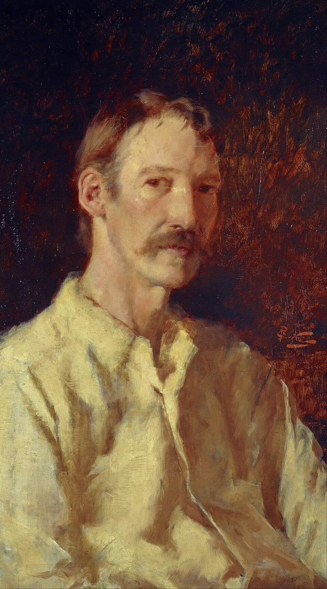

Robert Louis Stevenson
Luottamus joutuu koetukselle vaaran keskellä.
Stevenson vie lukijan aarteenetsinnästä kaupungin salaisuuksiin ja tutkii samalla ihmisen ristiriitaisuutta.
Etsi teokset kirjastostaElämä ja teokset
Robert Louis Stevenson syntyi Edinburghissa. Hän matkusti paljon ja kirjoitti romaanien lisäksi kertomuksia, runoja ja matkakirjallisuutta. Elämänsä viimeiset vuodet hän vietti Samoalla.
Aarresaari ilmestyi kirjana vuonna 1883 aiemman jatkokertomusjulkaisun jälkeen. Tohtori Jekyllin ja herra Hyden merkillinen tapaus seurasi vuonna 1886. Molemmissa luotettavalta näyttävän pinnan takana odottaa epävarmuus.
Tyyli ja teemat
Stevenson säätelee taitavasti sitä, mitä kertoja ja lukija voivat tietää. Havainnot ja epäilyt kasaantuvat, mutta selitykset viipyvät. Seikkailussa moraalinen valinta voi olla vaikeampi kuin näkyvä vaara, eikä viehättävä esiintyminen takaa hyvää tarkoitusta.
Salaisuudet · Luottamus · Kaksijakoisuus
Aloita tästä
Aarresaari
Jim Hawkinsin aarrekartta johdattaa merimatkalle, jolla ystävän ja vihollisen tunnistaminen käy vaikeaksi.
Tohtori Jekyllin ja herra Hyden merkillinen tapaus
Lontoon oudot tapahtumat avautuvat havaintojen ja todistusten kautta. Lue vähitellen rakentuvana arvoituksena.
Seuraa, kenen tietoon kulloinkin tukeudut ja millä perusteella päätät uskoa häntä.